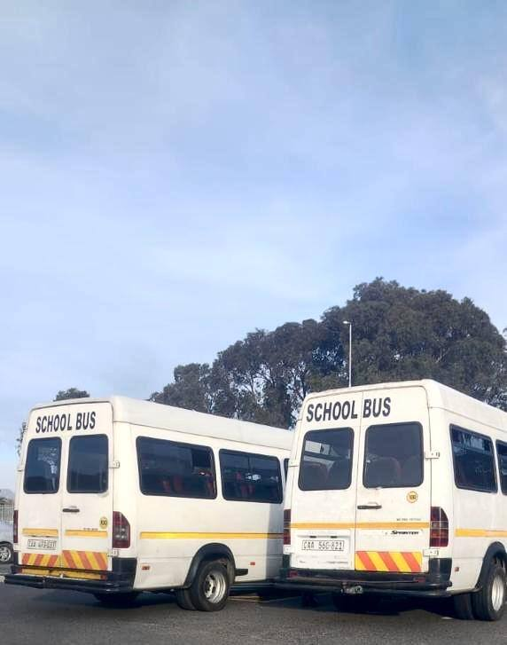

A leading, trusted name in Western Cape transport
To become a leading and trusted transportation company in the Western Cape, providing safe, professional and reliable transportation services to schools, tourists, businesses and communities.
A Cape Town transport business that started with the most important passengers of all: children on their way to school.
Sibaca Journeys began in learner transport. For several years our Mercedes-Benz Sprinter buses have carried learners between Langa and Pinelands every school day — early mornings, afternoon pickups, rain or shine.
That daily routine taught us what families, schools and clients really need from a transport company: safety, punctuality, clear communication and drivers you can trust.
Today we're bringing that same standard to more people and more places — charters, corporate and staff transport, airport transfers, events, tours and long-distance travel — while scholar transport remains the heart of what we do.

To become a leading and trusted transportation company in the Western Cape, providing safe, professional and reliable transportation services to schools, tourists, businesses and communities.
To move people safely, comfortably and on time — treating every learner, traveller and client with care, and growing a transport business our community can be proud of.
The first question on every trip: is everyone safe?
We show up when we say we will, every time.
We treat every passenger the way we'd want our own family treated.
Proudly Cape Town, creating jobs and opportunities as we grow.
Our plan is to grow step by step — strengthening what we do today, then expanding into new services and a bigger fleet.
Reliable service for our learners today, and partnerships with more schools.
Tours, airport transfers, staff transport and event shuttles for businesses, hotels and visitors.
More Sprinters, larger buses and smaller passenger vehicles as demand grows.
Get in touch for a quote or to talk about a regular contract.